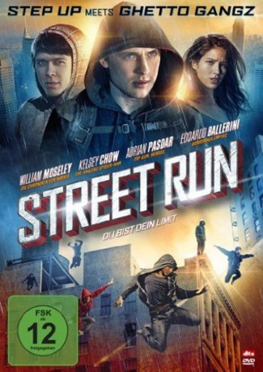

gesehen am 09.03.2019
gesehen am 09.03.2019Alternativ: Run (Englischer Titel) gesehen am 09.03.2019
 
 IMDB-Wertung: 4.7 / 10
IMDB-Wertung: 4.7 / 10  Metascore:
Metascore: 
Daniel Lombardi führt mit seinem Vater Mike ein Leben auf der Flucht. Schuld daran ist nicht nur dessen dunkle Vergangenheit, sondern auch Daniels “Broterwerb”: Um überleben zu können, nutzt er seine Parkouring-Fähigkeiten für spektakuläre Raubzüge. Als er in New York endlich neue Freunde zu machen glaubt und in der hübschen Emily die Liebe seines Lebens trifft, droht seine kriminelle Vergangenheit ihn einzuholen...
Jahr: 2013
Dauer: 90 Minuten
FSK: 12
Land: USA Studio: Millennium EntertainmentTonspuren: DTS - ,
Untertitel: Deutsch,
Auflösung: 1080p (1920x1080) Größe: 7147 MB
Genre: Action, Thriller, Liebe
Regisseur: Simone Bartesaghi
Drehbuch: Simone Bartesaghi, Joseph Michael Lagana
Soundtrack: Tree Adams
Darsteller:
 William Moseley als Daniel Lombardi
William Moseley als Daniel Lombardi Edoardo Ballerini als Luke
Edoardo Ballerini als Luke Adrian Pasdar als Mike Lombardi
Adrian Pasdar als Mike Lombardi Eric Roberts als Jeremiah
Eric Roberts als Jeremiah Brian Distance als Officer O'Donnell
Brian Distance als Officer O'Donnell Saul Stein als Steward Norton
Saul Stein als Steward Norton Joe Perrino als Security Guard Owens
Joe Perrino als Security Guard OwensDatei: X:\2013(N-Z)\Street Run - Du bist dein Limit (2013, FSK12, 1920x1080).mkv seit 09.03.2019
Festplatte: HD 2013(I-Z)-2014(A-Z)
 Es gibt insgesamt 133 Filme in der Gruppe '2013(N-Z)'
Es gibt insgesamt 133 Filme in der Gruppe '2013(N-Z)'